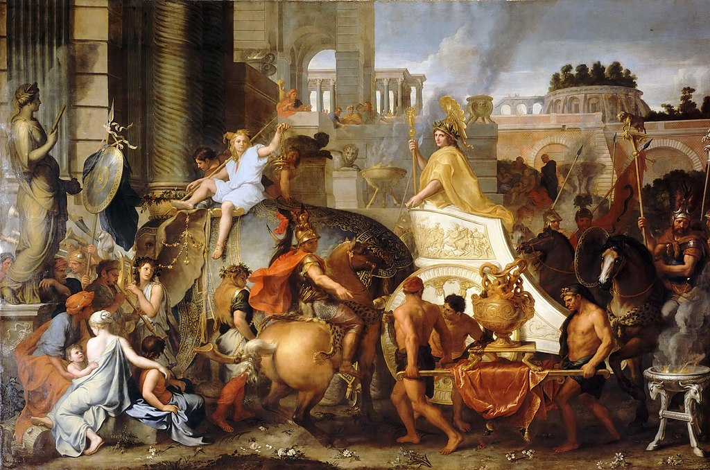

<head>
<meta charset="UTF-8" />
<meta name="keywords" content="drawing, painting" />
<meta name="description" content="drawings by Sunjy" />
<title>Sunjy</title>
<link rel="shortcut icon" type="image/x-icon" href="../../mImages/mCommon/favicon.ico" media="screen" />
<link rel="stylesheet" type="text/css" href="../../mCsses/mCommon/mCssA.css" />
<link rel="stylesheet" type="text/css" href="../../mCsses/mCommon/mCssB.css" />
<link rel="stylesheet" type="text/css" href="../../mCsses/mCommon/mCssC.css" />
<link rel="stylesheet" type="text/css" href="../../mCsses/mCommon/mCssD.css" />
<link rel="stylesheet" type="text/css" href="../../mCsses/mContent/mCssA.css" />
<link rel="stylesheet" type="text/css" href="../../mCsses/mContent/mCssB.css" />
<link rel="stylesheet" type="text/css" href="../../mCsses/mContent/mCssC.css" />
<link rel="stylesheet" type="text/css" href="../../mCsses/mContent/mCssD.css" />
</head>
<script type="text/javascript" src="../../mScripts/mContent/mContentAA.js" /></script>
<script type="text/javascript" src="../../mScripts/mContent/mContentAB.js" /></script>
<script type="text/javascript" src="../../mScripts/mContent/mContentAC.js" /></script>
<script type="text/javascript" src="../../mScripts/mContent/mContentAD.js" /></script>
<script type="text/javascript"></script> 
<script type="text/javascript">
document.write('<div class="mImgAbsolute"></div>');
/*
document.write('<p class="mFontSizeBColor" />From a white paper...</p>');
document.write('<table class="center"><tr><td>');
document.write('');
document.write('</td></tr></table>');
*/
</script>


<script type="text/javascript">
document.write('<p class="mFontSizeBColor" />The Triumph of Alexander </p>');
document.write('<p class="mFontSizeSColor" />Entry of Alexander into Babylon by Charles Le Brun depicts Alexander the Great standing in a chariot drawn by two elephants as he makes his triumphant entry into the Persian capital of Babylon. Alexander had defeated Darius III of Persia at the Battle of Issus in 333 BC. He expected further battles to take Babylon but was surprised to see the city open to give him a hero’s welcome.<br><br>Le Brun depicts Alexander in a golden cape, holding a scepter topped by a goldern victory statute and wearing a golden helmet with a laurel leaves.  He is preceded by trumpeters and followed by his mounted warriors. Hephaestion, Alexander’s friend, is directing the parade of captured treasures signified by the large golden vase. In the background are the Hanging Gardens of Babylon, and in the foreground is a statue of Semiramis, an ancient and famous Persian queen, on the left.<br><br>Alexander the Great<br><br>Alexander III of Macedon is known as Alexander the Great. He succeeded to the throne at the age of 20 spent most of his years on military campaigns through Asia and northeast Africa. By the time of his death at the age of thirty-two, he had created one of the largest empires of the ancient world, stretching from Greece to northwestern India. Alexander was undefeated in battle and is considered history’s most successful military commander.<br><br>During his youth, Alexander was tutored by Aristotle. He inherited a strong kingdom and an experienced army. Alexander was awarded the generalship of Greece and used this authority to launch a pan-Hellenic campaign to lead the Greeks in the conquest of Persia. In 334 BC, he invaded the Persian Empire and began a series of battles that lasted ten years.<br><br>Alexander died ten years after his entry into Babylon, the city that he planned to establish as his capital. In the years following his death, a series of civil wars tore his empire apart, resulting in the establishment of several states ruled by Alexander’s surviving generals and heirs.<br><br>Alexander’s legacy includes the Greek cultural diffusion which his conquests engendered, such as Greco-Buddhism. He founded some twenty cities that bore his name. The spread of Greek culture in the east resulted in a new Hellenistic civilization, aspects of which were still evident in the traditions of the Byzantine Empire and the presence of Greek speakers in central and far eastern Anatolia until the 1920s.<br><br>Persian Campaign<br><br>After capturing Egypt, Alexander marched eastward into Mesopotamia (Iraq) and defeated Darius for a second time at the Battle of Gaugamela. Darius once more fled the field, and Alexander captured Babylon. From Babylon, Alexander went to Susa and captured its treasury. He then hurried to Persepolis before its garrison could loot the treasury.<br><br>On entering Persepolis, Alexander allowed his troops to loot the city for several days. During Alexander stayed in Persepolis, a fire broke out in the palace of Xerxes I and spread to the rest of the city. Possible causes include Greek revenge for the burning of the Acropolis of Athens during the Second Persian War by Xerxes. Plutarch recounts an anecdote in which Alexander pauses and talks to a fallen statue of Xerxes:<br><br>“Shall I pass by and leave you lying there because of the expeditions you led against Greece, or shall I set you up again because of your magnanimity and your virtues in other respects?”<br><br>Alexander died in the palace of Nebuchadnezzar II, in Babylon, at age 32 in 323 BC. Many arguments have been made for and against poisoning theories. Natural-cause theories tend to emphasize Alexander’s poor health and his general decline after years of heavy drinking and severe wounds.<br></p>');
document.write('<table class="center" /><tr><td>');
document.write('<br>Le Brun depicts Alexander in a golden cape, holding a scepter topped by a goldern victory statute and wearing a golden helmet with a laurel leaves.  He is preceded by trumpeters and followed by his mounted warriors. Hephaestion, Alexander’s friend, is directing the parade of captured treasures signified by the large golden vase. In the background are the Hanging Gardens of Babylon, and in the foreground is a statue of Semiramis, an ancient and famous Persian queen, on the left.<br><br>Alexander the Great<br><br>Alexander III of Macedon is known as Alexander the Great. He succeeded to the throne at the age of 20 spent most of his years on military campaigns through Asia and northeast Africa. By the time of his death at the age of thirty-two, he had created one of the largest empires of the ancient world, stretching from Greece to northwestern India. Alexander was undefeated in battle and is considered history’s most successful military commander.<br><br>During his youth, Alexander was tutored by Aristotle. He inherited a strong kingdom and an experienced army. Alexander was awarded the generalship of Greece and used this authority to launch a pan-Hellenic campaign to lead the Greeks in the conquest of Persia. In 334 BC, he invaded the Persian Empire and began a series of battles that lasted ten years.<br><br>Alexander died ten years after his entry into Babylon, the city that he planned to establish as his capital. In the years following his death, a series of civil wars tore his empire apart, resulting in the establishment of several states ruled by Alexander’s surviving generals and heirs.<br><br>Alexander’s legacy includes the Greek cultural diffusion which his conquests engendered, such as Greco-Buddhism. He founded some twenty cities that bore his name. The spread of Greek culture in the east resulted in a new Hellenistic civilization, aspects of which were still evident in the traditions of the Byzantine Empire and the presence of Greek speakers in central and far eastern Anatolia until the 1920s.<br><br>Persian Campaign<br><br>After capturing Egypt, Alexander marched eastward into Mesopotamia (Iraq) and defeated Darius for a second time at the Battle of Gaugamela. Darius once more fled the field, and Alexander captured Babylon. From Babylon, Alexander went to Susa and captured its treasury. He then hurried to Persepolis before its garrison could loot the treasury.<br><br>On entering Persepolis, Alexander allowed his troops to loot the city for several days. During Alexander stayed in Persepolis, a fire broke out in the palace of Xerxes I and spread to the rest of the city. Possible causes include Greek revenge for the burning of the Acropolis of Athens during the Second Persian War by Xerxes. Plutarch recounts an anecdote in which Alexander pauses and talks to a fallen statue of Xerxes:<br><br>“Shall I pass by and leave you lying there because of the expeditions you led against Greece, or shall I set you up again because of your magnanimity and your virtues in other respects?”<br><br>Alexander died in the palace of Nebuchadnezzar II, in Babylon, at age 32 in 323 BC. Many arguments have been made for and against poisoning theories. Natural-cause theories tend to emphasize Alexander’s poor health and his general decline after years of heavy drinking and severe wounds.<br>" />');
document.write('</td></tr></table>');
</script>


